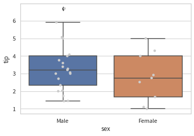
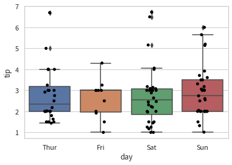
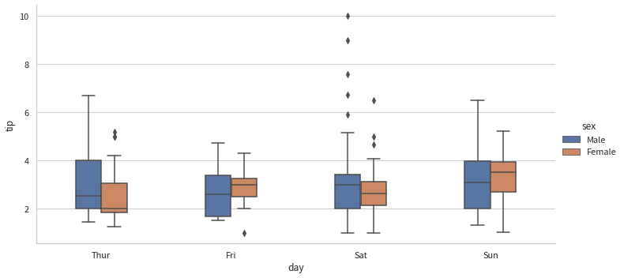

범주형 독립변수
Contents
3.13. 범주형 독립변수#
import seaborn as sns
tips = sns.load_dataset("tips").sample(frac=1, random_state=0).reset_index(drop=True)
tips.head()
| total_bill | tip | sex | smoker | day | time | size | |
|---|---|---|---|---|---|---|---|
| 0 | 17.59 | 2.64 | Male | No | Sat | Dinner | 3 |
| 1 | 18.29 | 3.76 | Male | Yes | Sat | Dinner | 4 |
| 2 | 19.49 | 3.51 | Male | No | Sun | Dinner | 2 |
| 3 | 7.25 | 1.00 | Female | No | Sat | Dinner | 1 |
| 4 | 16.27 | 2.50 | Female | Yes | Fri | Lunch | 2 |
3.13.1. 레벨이 2개인 범주형 독립변수#
sns.boxplot(x="sex", y="tip", data=tips)
sns.stripplot(x="sex", y="tip", data=tips, color="0")
plt.show()

import numpy as np
tips.groupby("sex").agg({"tip": [np.mean, np.std]})
| tip | ||
|---|---|---|
| mean | std | |
| sex | ||
| Male | 3.089618 | 1.489102 |
| Female | 2.833448 | 1.159495 |
import statsmodels.api as sm
model1 = sm.OLS.from_formula("tip ~ C(sex)", tips)
result1 = model1.fit()
print(result1.summary())
OLS Regression Results
==============================================================================
Dep. Variable: tip R-squared: 0.008
Model: OLS Adj. R-squared: 0.004
Method: Least Squares F-statistic: 1.926
Date: Sun, 14 Aug 2022 Prob (F-statistic): 0.166
Time: 15:31:22 Log-Likelihood: -423.98
No. Observations: 244 AIC: 852.0
Df Residuals: 242 BIC: 859.0
Df Model: 1
Covariance Type: nonrobust
====================================================================================
coef std err t P>|t| [0.025 0.975]
------------------------------------------------------------------------------------
Intercept 3.0896 0.110 28.032 0.000 2.873 3.307
C(sex)[T.Female] -0.2562 0.185 -1.388 0.166 -0.620 0.107
==============================================================================
Omnibus: 75.995 Durbin-Watson: 1.922
Prob(Omnibus): 0.000 Jarque-Bera (JB): 194.975
Skew: 1.415 Prob(JB): 4.59e-43
Kurtosis: 6.342 Cond. No. 2.42
==============================================================================
Notes:
[1] Standard Errors assume that the covariance matrix of the errors is correctly specified.
import pandas as p
X1 = pd.DataFrame(model1.exog, columns=model1.exog_names).head(10).astype(int)
X1.style.background_gradient(vmin=0, vmax=1)
| Intercept | C(sex)[T.Female] | |
|---|---|---|
| 0 | 1 | 0 |
| 1 | 1 | 0 |
| 2 | 1 | 0 |
| 3 | 1 | 1 |
| 4 | 1 | 1 |
| 5 | 1 | 1 |
| 6 | 1 | 0 |
| 7 | 1 | 0 |
| 8 | 1 | 1 |
| 9 | 1 | 0 |
model2 = sm.OLS.from_formula("tip ~ C(sex) + 0", tips)
result2 = model2.fit()
print(result2.summary())
OLS Regression Results
==============================================================================
Dep. Variable: tip R-squared: 0.008
Model: OLS Adj. R-squared: 0.004
Method: Least Squares F-statistic: 1.926
Date: Sun, 14 Aug 2022 Prob (F-statistic): 0.166
Time: 15:31:22 Log-Likelihood: -423.98
No. Observations: 244 AIC: 852.0
Df Residuals: 242 BIC: 859.0
Df Model: 1
Covariance Type: nonrobust
==================================================================================
coef std err t P>|t| [0.025 0.975]
----------------------------------------------------------------------------------
C(sex)[Male] 3.0896 0.110 28.032 0.000 2.873 3.307
C(sex)[Female] 2.8334 0.148 19.137 0.000 2.542 3.125
==============================================================================
Omnibus: 75.995 Durbin-Watson: 1.922
Prob(Omnibus): 0.000 Jarque-Bera (JB): 194.975
Skew: 1.415 Prob(JB): 4.59e-43
Kurtosis: 6.342 Cond. No. 1.34
==============================================================================
Notes:
[1] Standard Errors assume that the covariance matrix of the errors is correctly specified.
X2 = pd.DataFrame(model2.exog, columns=model2.exog_names).head(10).astype(int)
X2.style.background_gradient(vmin=0, vmax=1)
| C(sex)[Male] | C(sex)[Female] | |
|---|---|---|
| 0 | 1 | 0 |
| 1 | 1 | 0 |
| 2 | 1 | 0 |
| 3 | 0 | 1 |
| 4 | 0 | 1 |
| 5 | 0 | 1 |
| 6 | 1 | 0 |
| 7 | 1 | 0 |
| 8 | 0 | 1 |
| 9 | 1 | 0 |
3.13.2. 레벨이 3개 이상인 범주형 독립변수#
sns.boxplot(x="day", y="tip", data=tips)
sns.stripplot(x="day", y="tip", data=tips, color="0")
plt.show()

tips.groupby("day").agg({"tip": [np.mean, np.std]})
| tip | ||
|---|---|---|
| mean | std | |
| day | ||
| Thur | 2.771452 | 1.240223 |
| Fri | 2.734737 | 1.019577 |
| Sat | 2.993103 | 1.631014 |
| Sun | 3.255132 | 1.234880 |
model3 = sm.OLS.from_formula("tip ~ C(day)", tips)
result3 = model3.fit()
print(result3.summary())
OLS Regression Results
==============================================================================
Dep. Variable: tip R-squared: 0.020
Model: OLS Adj. R-squared: 0.008
Method: Least Squares F-statistic: 1.672
Date: Sun, 14 Aug 2022 Prob (F-statistic): 0.174
Time: 15:31:23 Log-Likelihood: -422.43
No. Observations: 244 AIC: 852.9
Df Residuals: 240 BIC: 866.8
Df Model: 3
Covariance Type: nonrobust
=================================================================================
coef std err t P>|t| [0.025 0.975]
---------------------------------------------------------------------------------
Intercept 2.7715 0.175 15.837 0.000 2.427 3.116
C(day)[T.Fri] -0.0367 0.361 -0.102 0.919 -0.748 0.675
C(day)[T.Sat] 0.2217 0.229 0.968 0.334 -0.229 0.673
C(day)[T.Sun] 0.4837 0.236 2.051 0.041 0.019 0.948
==============================================================================
Omnibus: 82.801 Durbin-Watson: 1.932
Prob(Omnibus): 0.000 Jarque-Bera (JB): 238.276
Skew: 1.492 Prob(JB): 1.82e-52
Kurtosis: 6.811 Cond. No. 5.28
==============================================================================
Notes:
[1] Standard Errors assume that the covariance matrix of the errors is correctly specified.
X3 = pd.DataFrame(model3.exog, columns=model3.exog_names).head(10).astype(int)
X3.style.background_gradient(vmin=0, vmax=1)
| Intercept | C(day)[T.Fri] | C(day)[T.Sat] | C(day)[T.Sun] | |
|---|---|---|---|---|
| 0 | 1 | 0 | 1 | 0 |
| 1 | 1 | 0 | 1 | 0 |
| 2 | 1 | 0 | 0 | 1 |
| 3 | 1 | 0 | 1 | 0 |
| 4 | 1 | 1 | 0 | 0 |
| 5 | 1 | 1 | 0 | 0 |
| 6 | 1 | 0 | 1 | 0 |
| 7 | 1 | 0 | 0 | 1 |
| 8 | 1 | 0 | 0 | 1 |
| 9 | 1 | 0 | 0 | 1 |
model4 = sm.OLS.from_formula("tip ~ C(day, Treatment('Sun'))", tips)
result4 = model4.fit()
print(result4.summary())
OLS Regression Results
==============================================================================
Dep. Variable: tip R-squared: 0.020
Model: OLS Adj. R-squared: 0.008
Method: Least Squares F-statistic: 1.672
Date: Sun, 14 Aug 2022 Prob (F-statistic): 0.174
Time: 15:31:23 Log-Likelihood: -422.43
No. Observations: 244 AIC: 852.9
Df Residuals: 240 BIC: 866.8
Df Model: 3
Covariance Type: nonrobust
====================================================================================================
coef std err t P>|t| [0.025 0.975]
----------------------------------------------------------------------------------------------------
Intercept 3.2551 0.158 20.594 0.000 2.944 3.566
C(day, Treatment('Sun'))[T.Thur] -0.4837 0.236 -2.051 0.041 -0.948 -0.019
C(day, Treatment('Sun'))[T.Fri] -0.5204 0.353 -1.472 0.142 -1.217 0.176
C(day, Treatment('Sun'))[T.Sat] -0.2620 0.216 -1.211 0.227 -0.688 0.164
==============================================================================
Omnibus: 82.801 Durbin-Watson: 1.932
Prob(Omnibus): 0.000 Jarque-Bera (JB): 238.276
Skew: 1.492 Prob(JB): 1.82e-52
Kurtosis: 6.811 Cond. No. 4.93
==============================================================================
Notes:
[1] Standard Errors assume that the covariance matrix of the errors is correctly specified.
X4 = pd.DataFrame(model4.exog, columns=model4.exog_names).head(10).astype(int)
X4.style.background_gradient(vmin=0, vmax=1)
| Intercept | C(day, Treatment('Sun'))[T.Thur] | C(day, Treatment('Sun'))[T.Fri] | C(day, Treatment('Sun'))[T.Sat] | |
|---|---|---|---|---|
| 0 | 1 | 0 | 0 | 1 |
| 1 | 1 | 0 | 0 | 1 |
| 2 | 1 | 0 | 0 | 0 |
| 3 | 1 | 0 | 0 | 1 |
| 4 | 1 | 0 | 1 | 0 |
| 5 | 1 | 0 | 1 | 0 |
| 6 | 1 | 0 | 0 | 1 |
| 7 | 1 | 0 | 0 | 0 |
| 8 | 1 | 0 | 0 | 0 |
| 9 | 1 | 0 | 0 | 0 |
model5 = sm.OLS.from_formula("tip ~ C(day) + 0", tips)
result5 = model5.fit()
print(result5.summary())
OLS Regression Results
==============================================================================
Dep. Variable: tip R-squared: 0.020
Model: OLS Adj. R-squared: 0.008
Method: Least Squares F-statistic: 1.672
Date: Sun, 14 Aug 2022 Prob (F-statistic): 0.174
Time: 15:31:23 Log-Likelihood: -422.43
No. Observations: 244 AIC: 852.9
Df Residuals: 240 BIC: 866.8
Df Model: 3
Covariance Type: nonrobust
================================================================================
coef std err t P>|t| [0.025 0.975]
--------------------------------------------------------------------------------
C(day)[Thur] 2.7715 0.175 15.837 0.000 2.427 3.116
C(day)[Fri] 2.7347 0.316 8.651 0.000 2.112 3.357
C(day)[Sat] 2.9931 0.148 20.261 0.000 2.702 3.284
C(day)[Sun] 3.2551 0.158 20.594 0.000 2.944 3.566
==============================================================================
Omnibus: 82.801 Durbin-Watson: 1.932
Prob(Omnibus): 0.000 Jarque-Bera (JB): 238.276
Skew: 1.492 Prob(JB): 1.82e-52
Kurtosis: 6.811 Cond. No. 2.14
==============================================================================
Notes:
[1] Standard Errors assume that the covariance matrix of the errors is correctly specified.
X5 = pd.DataFrame(model5.exog, columns=model5.exog_names).head(10).astype(int)
X5.style.background_gradient(vmin=0, vmax=1)
| C(day)[Thur] | C(day)[Fri] | C(day)[Sat] | C(day)[Sun] | |
|---|---|---|---|---|
| 0 | 0 | 0 | 1 | 0 |
| 1 | 0 | 0 | 1 | 0 |
| 2 | 0 | 0 | 0 | 1 |
| 3 | 0 | 0 | 1 | 0 |
| 4 | 0 | 1 | 0 | 0 |
| 5 | 0 | 1 | 0 | 0 |
| 6 | 0 | 0 | 1 | 0 |
| 7 | 0 | 0 | 0 | 1 |
| 8 | 0 | 0 | 0 | 1 |
| 9 | 0 | 0 | 0 | 1 |
3.13.3. 복수의 범주형 독립변수#
g = sns.catplot(x="day", y="tip", hue="sex", data=tips,
kind="box", width=0.4, aspect=2)
plt.show()
